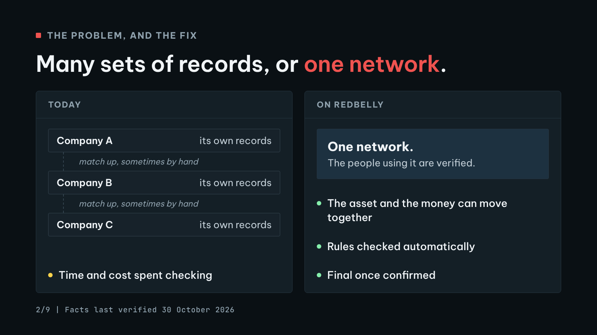

9 posts, 5 images. Written for a friend, a parent or a business owner. Facts last verified 30 October 2026.
Post 1 of 9252 / 280
Redbelly in one sentence: a public network, built in Australia, where real financial assets like bonds, investment funds and loans can be issued, managed and traded as digital items, with ID checks and the rules built in.
Here is why that matters. 1/9
Alt text. Title card on a dark slate background. Small label: Meet Redbelly. Headline: Real assets. Verified people. Rules built in. Below it: Redbelly is a public network, built in Australia, where bonds, investment funds and loans can be issued, managed and traded as digital items. Footer: Facts last verified 30 October 2026, with the Redbelly DAO logo in the corner.
Sources: S01, S02, S03, S07, S10, S11, S12
Post 2 of 9237 / 280
Start with the problem. Buying into a bond or a fund today means money and paperwork passing between several companies. Each one keeps its own records, and they all have to be matched up, sometimes by hand. That costs time and money. 2/9

Alt text. Side by side comparison titled: Many sets of records, or one network. Left panel, Today: three boxes, Company A, Company B and Company C, each with its own records, joined by lines marked: match up, sometimes by hand. Below: time and cost spent checking. Right panel, On Redbelly: one network, where the people using it are verified. Three points: the asset and the money can move together, rules checked automatically, final once confirmed.
Sources: S10
Post 3 of 9249 / 280
Now picture a digital concert ticket. It proves the seat is yours, it moves to a new owner in seconds, and the venue sets the rules on who can resell it.
Redbelly lets financial assets work the same way. In finance, this is called tokenisation. 3/9
Alt text. Two cards compared row by row. Left card, Concert ticket: proves seat 14B is yours, moves to a new owner in seconds, rules set by the venue, held by whoever the venue allows. Right card, Digital fund unit: proves 1 unit of Example Fund is yours, can settle instantly, rules set by the issuer and checked automatically, held by verified, eligible investors. Footer: Illustrative example. Example Fund is not a real product.
Sources: S01, S07, S12
Post 4 of 9260 / 280
The part most people miss: Redbelly is designed so the people using it are verified. Each transfer can be checked against the asset's rules automatically. And privacy tech is used so that being verified does not mean showing everyone your personal details. 4/9
Sources: S01, S03, S06, S07, S12
Post 5 of 9270 / 280
So who keeps the records straight? No single computer gets the final say. A group of computers must agree on every transaction, using a voting method developed at the University of Sydney. Once something is confirmed, it is final, and everyone sees the same version. 5/9
Sources: S03, S06, S12
Post 6 of 9260 / 280
Where it comes from: Redbelly grew out of research at the University of Sydney and CSIRO, Australia's national science agency. The live network launched in November 2024. Tokeniser, a Redbelly Network project, runs on it for Australian funds and companies. 6/9
Sources: S02, S03, S07, S11
Post 7 of 9268 / 280
It has also been used in a central bank project. Project Acacia, run by the Reserve Bank of Australia and the Digital Finance CRC, used Redbelly as one of its networks, including for pilot digital money from the central bank. The final report came out in May 2026. 7/9
Alt text. Fact card titled Project Acacia: a research project of the Reserve Bank of Australia and the Digital Finance Cooperative Research Centre. Four facts with status dots: Redbelly was one of the networks used for pilot use cases. Pilot digital central bank money was used on Redbelly for testing. Use cases on Redbelly were led by Australian Bond Exchange, Fireblocks, Macropod and NotCentralised. Final report published May 2026. Footer: Research, not an endorsement. The RBA does not endorse any participant. Facts last verified 30 October 2026. Source: RBA and DFCRC, Project Acacia final report, May 2026.
Sources: S02, S04, S05, S08, S09, S10
Post 8 of 9260 / 280
On Redbelly, teams led by Australian Bond Exchange, Fireblocks, Macropod and NotCentralised tested things like corporate bonds, an investment fund and a security backed by loans. To be clear: this was research, and the RBA does not endorse any participant. 8/9
Sources: S04, S05, S10
Post 9 of 9273 / 280
Why it matters:
Businesses can raise money and manage investors digitally, with the rules built in.
Trades can settle instantly.
The money and the asset can move together, with less back and forth.
Real assets, verified people, rules built in.
redbelly.network 9/9
Alt text. Summary card titled Why it matters, What changes, in plain words. Three columns. For a business: raise money and manage investors digitally, with the rules built in. For an investor: trades can settle instantly. For everyone: the money and the asset can move together, with less back and forth. A band below reads: Real assets. Verified people. Rules built in. redbelly.network, with the Redbelly DAO logo. Footer: Facts last verified 30 October 2026.
Sources: S06, S07, S10, S12
Sources
Quotes for every claim, with page numbers and screenshots, are in SOURCES.md and docs/FACT_CHECK.md.
S02. About Us, including the Redbelly Journey timeline Redbelly Network. https://redbelly.network/about-us Accessed 30 October 2026. Supports C02, C14, C16, C20.
S03. Redbelly Network Selected for the Reserve Bank of Australia's Project Acacia Redbelly Network. https://redbelly.network/projectacacia Accessed 30 October 2026. Supports C02, C08, C10, C11, C12, C13, C14.
S07. Tokeniser homepage, including FAQ and footer Tokeniser Pty Ltd. https://tokeniser.com/ Accessed 30 October 2026. Supports C01, C04, C06, C07, C09, C14, C15, C17, C26, C27.
S08. Media Release 2025-18: Project Acacia, RBA and DFCRC announce chosen industry participants (10 July 2025) Reserve Bank of Australia. https://www.rba.gov.au/media-releases/2025/mr-25-18.html Accessed 30 October 2026. Supports C19, C21.
S09. Media Release 2026-13: RBA and DFCRC Release Findings From Project Acacia (18 May 2026) Reserve Bank of Australia. https://www.rba.gov.au/media-releases/2026/mr-26-13.html Accessed 30 October 2026. Supports C22.
S10. Project Acacia: Exploring the Role of Digital Money in Wholesale Tokenised Asset Markets, Final Report (May 2026) Reserve Bank of Australia and Digital Finance Cooperative Research Centre. https://www.rba.gov.au/payments-and-infrastructure/tokenised-money/pdf/project-acacia-final-report.pdf Accessed 30 October 2026. Supports C01, C03, C05, C20, C21, C23, C24, C28.
S11. Redbelly Mainnet is now LIVE! (blog post, 28 November 2024) Redbelly Network. https://redbelly.network/blog/redbelly-mainnet-is-live-now Accessed 30 October 2026. Supports C02, C14, C16.


![Fact card titled Project Acacia: a research project of the Reserve Bank of Australia and the Digital Finance Cooperative Research Centre. Four facts with status dots: Redbelly was one of the networks used for pilot use cases. Pilot digital central bank money was used on Redbelly for testing. Use cases on Redbelly were led by Australian Bond Exchange, Fireblocks, Macropod and NotCentralised. Final report published May 2026. Footer: Research, not an endorsement. The RBA does not endorse any participant. Facts last verified 30 October 2026. Source: RBA and DFCRC, Project Acacia final report, May 2026.](../../submission/images/post-07.png)